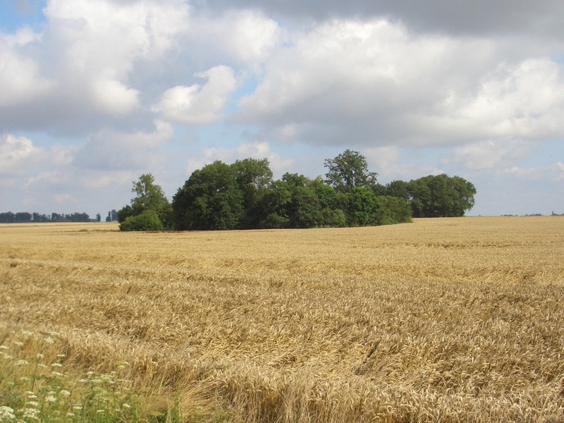
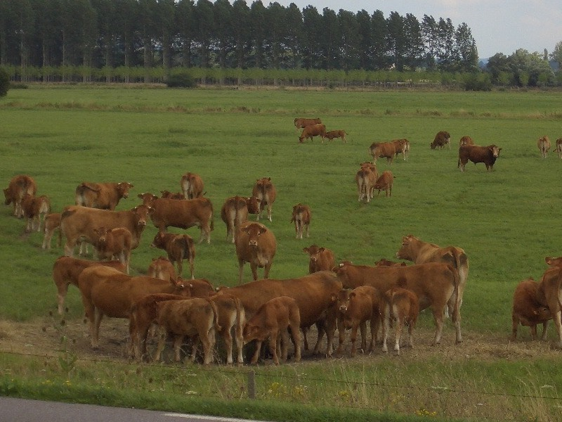
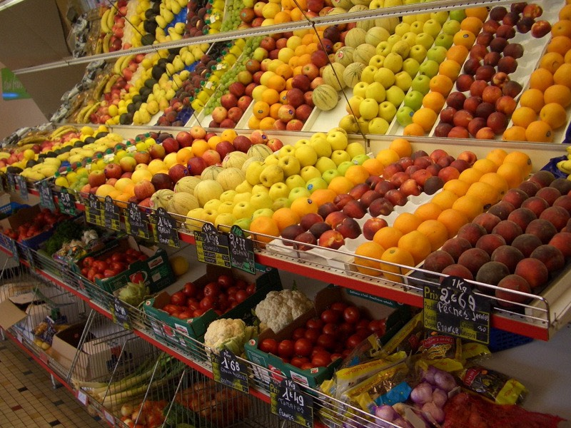
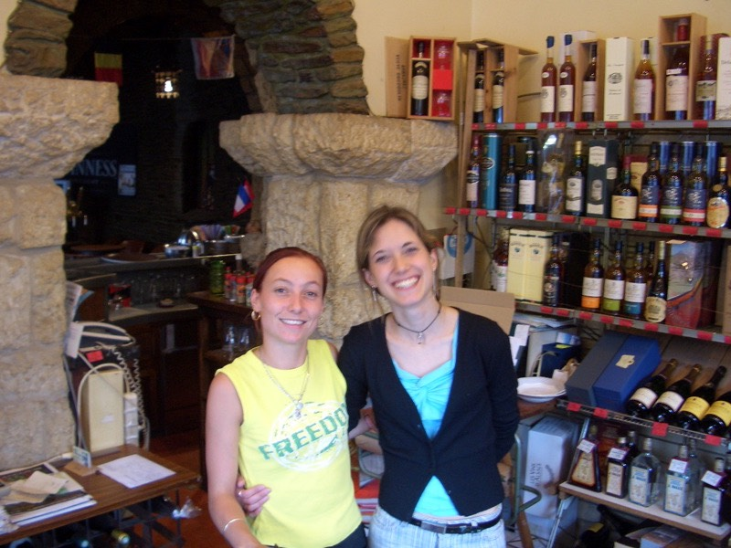
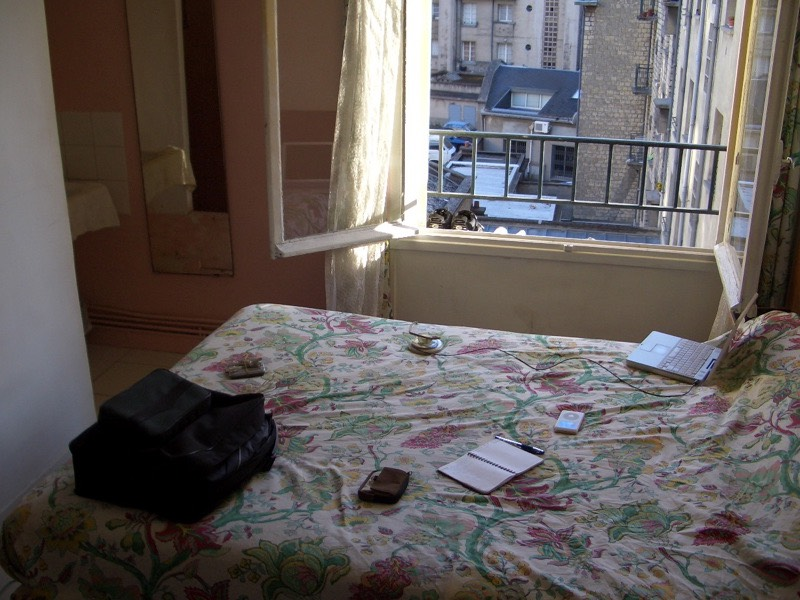

昨天睡得正安穩的時候，被滂沱大雨混雜著閃電的氣勢給驚醒。
趕緊跳下床將放在窗台吹風的鞋子給收進來放，看著驚人的雨勢，
幸好以找到了落腳處，並安穩的在休息，要是騎到半路下起這種大雨的話。
恐怕不是穿雨衣就能抵擋雨勢繼續騎，不找個地方歇腳躲雨，一定沒輒。
不管了，睡覺去吧∼不會連下一整夜到明天早上吧？
早上六點多，被冷冷的風給吹醒，那個豬頭忘了關窗戶？冷死了 @@"
等等，我一個人住呀，除了我沒關窗戶，那還會有誰？
昨天顧著看雨，睡覺時連窗都忘了關，好里加在雨沒有濺進來裡面。
關窗時發現雨停了，天氣好好，可是氣溫好低，感覺只有15~6度。
去櫃子多拿一條棉被，回床上再睡回籠覺，六點起床太早了，我已經退伍了呀∼ = ="
睡到八點，一隻貓在窗台『喵∼喵』叫個不停，硬是要把我挖起來才甘心。
既然如此就起床吧，收拾行李時發現，iPod從昨天八分滿的電力，充了一整晚之後居然沒電了？
難道充電變成了放電？真是莫名其妙∼利用收行李的時間，趕緊充電備用，不然今天就沒歌廳了。
拖到九點半多才出發，臨走前再抓了三把各式口味的糖果，當今天的零嘴。
十點的時候到加油站買了大包的Lays當早餐，1.9歐元，但份量比小包的多很多。

結帳時看到法國的報紙，感覺薄薄的，這麼大的法國報紙這麼薄，小小台灣卻是厚厚一疊。
今天沿著N13公路直直走就可以接回原定的目標『開恩』。
騎了沒半小時，發覺右腳的膝蓋好痛，這才想到昨天騎了一百四十幾公里之後，忘了塗藥膏就睡了。
隔天右腳馬上不爭氣的抗議了起來，只要用力踩踏板，膝蓋就痛的整隻右腳軟掉。
幾乎都是靠左腳在用力騎，右腳只能點綴式的踩一兩下。
遇到平路就打低速檔慢慢騎，下坡就放給它滑，上坡的話....先喘一口氣，然後咬緊牙根的騎上去吧。
出發一小時候，首度在這麼早的時候就看到目的地的指示牌，同時還標上了里程數。
有點像是下戰帖一樣，這一路有107公里，有本事你就騎過來吧。
雖然早知道今天騎過去沒有個100公里是到不了的，但直接就看到牌子又是另一種感受。
衡量著右腳的情況，不曉得騎不騎的到呀？
法國的小麥田很可愛，在一整片的田裡，常常會出現一小叢的森林，是整地的時候懶得整掉嗎？

台灣人：『趕快看！綿羊耶！』
綿羊：『趕快看！台灣人耶！』
撐著腳痛，中午十二點到加油站附設的便利商店買了一瓶1歐元的芭樂汁。
原來歐洲人也吃芭樂∼開瓶喝了一口之後，發現是酸的.........而且水水的，沒有芭樂汁的口感。
仔細一看，原來是蘋果汁呀 /_\ 包裝做的真像。
還以為喝到酸掉的芭樂汁，正為自己的白癡感到好笑時，iPod沒電了 ~"~ 真快。
路上經過的大湖，那高高的白色建築像路的東西，不知是什麼？
FCR1好累對吧，我也是，那就休息一下吧。
（馬鞍袋右邊的小袋子因為損毀，已經被我扯掉了）
希望好天氣持續
全部都用小麥梗做的風車，真的會轉唷∼！
純木頭的候車站，休息一下再出發。
不知道是太陽有點大，還是膝蓋痛的緣故，額頭冒出了一滴一滴的汗水。
也不知道是痛習慣了還是膝蓋的情況好一點了，漸漸的沒那麼樣的痛了。
超酷的房子！像是用小麥梗做的屋頂∼屋頂上還長草勒∼也有煙囪。
一路上逆風吹的路旁的草都彎了腰，草彎腰沒關係，人可不能因此就低頭。
這是一隻很古怪的牛，當牠的同伴都在太陽底下吃草的時候。
牠就在樹蔭下休息，然後站起來，吃一口樹上的樹葉，再繼續休息。
樹上比較低的葉子，都被牠吃光光了，你到底是牛還是長頸鹿呀∼
這也是結實累累的不明果樹，果子是綠色的，看不太清楚，但整棵樹滿滿的都是∼
一路上，只要起風的時候，滿天的蒲公英白子種子就滿天飛舞，隨風飄揚∼
現在真是適合旅行的季節，連蒲公英都出來冒險了，有種遇到小夥伴的滋味。
今天不知道為什麼，接二連三的被外國人加油，之前騎車都沒人要理我，見怪不怪。
難道是現在騎的路線，比較少單車旅行者嗎？無論如何，被加油的感覺永遠是那麼樣的爽！
交通牌上畫了一顆蘋果，是表示有蘋果園嗎？
那這個應該就是蘋果樹囉？
我不太相信運氣這種東西，因為我的運氣老是蠻背的。
半路看到比較熱鬧的地方，都會拿出iBook看看有沒有無線網路可以用，十之八九都是落空的居多。
難得看到有無線網路訊號，又都是要密碼，老是猜1234跟0000，沒有一次成功過。
下午又拿出iBook來的時候，沒訊號不說，大風一吹，居然把夾在iBook裡面，
用來隔離鍵盤跟螢幕的尼龍墊子給吹跑了。
一吹就吹好遠，最後停在30公尺遠的地方（逆風嘛，當然是吹回我騎來的路上）。
有點不是很想去撿，反正只是一塊買iBook時隨機附的墊子，有錢一點的都嘛買牛皮墊子，
這種原廠的東西在拆封的時候就可以順道丟掉了，像我這樣還留了四年，被看到都會笑是小氣。
即便如此，我還是回去撿它，因為我是小氣鬼。
同時，沒有墊子隔著的話，iBook長時間蓋著，螢幕會留下鍵盤印的痕跡。
往回騎到iBook旁邊，彎腰準備要撿的時候，又吹來一陣風，墊子又被吹的更遠了.......
好，老天你有本事就捉弄我沒關係，既然決定要撿，那不撿到絕不罷休。
騎著車追著被風吹著跑的墊子，好不容易在路旁撿了回來。
剛剛說到運氣這種東西，我這樣叫背嗎？我也不知道。
打開iBook，準備把墊子夾回去的時候，發現無線網路訊號滿格，而且沒設密碼，可以偷用。
就這樣在路邊把昨天的遊記上傳，同時回了留言版的訊息，這時候是下午四點。
又回到運氣的話題，若不是剛好風把墊子吹的那麼遠，又一吹再吹，
若不是因為我是個小氣鬼非撿回來不可，那不會找到有網路可以用的地方。
我這樣真的叫背嗎？
下午四點半，水喝完了，看到路邊有一個白色小門，就去偷開看看，一打開發現是廁所。
門上面什麼標示也沒有，而且跟牆壁一樣都是白色的，這麼巧就被我看到，而且手賤的開它。
洗把臉，裝滿水，運氣這種東西，真的很玄呀∼∼∼
嘴巴無聊的時候就吃糖果，好多口味喔，要吃哪一個好？
這一路上，小麥田少了，但是牧場多了許多，養羊的、養馬的、養牛的。
牛群：『大家快點看！台灣人！』

圓滾滾的小麥梗方塊，就是被大卡車給載走的，不曉得能不能加工作成別的什麼東西。
這個牌子要稍微說明一下，從進入這個城鎮到離開，大約只有150公尺。
眼睛可以看到的只有十戶左右的人家。是個非常∼非常迷你的小城鎮。
就如同它自己的名字一樣『通過一個村落（Cross an Ville）』。
這又是另外一個路上經過的地方，一般城鎮都是在路旁種花花草草。
但這邊種的是類似小番茄的植物，一整排都是，蠻壯觀的，不知道能不能吃？
下午六點，腳已經痛到痲痹了，到小超市補充一下食物，老吃糖果有點膩。

一路上都看到蘋果的標誌，不知不覺就買了兩顆蘋果，才1.11歐元，算便宜吧∼
台灣只吃的到進口的日本蘋果、美國蘋果，那法國蘋果就沒人吃過了吧？ :D
邊騎邊吃，味道不錯，相當甜美，很想連核都吃下去。
看到滿滿的旅館廣告，目的地近了。
不管多遠的距離，只要努力，總有到達的時候，開恩我來了。
一整天的好天氣，一到開恩就下雨.....難道你也靠海？雖然有看到船跟海鷗，但沒什麼靠海的感覺呀∼
滂沱大雨，趕快找地方躲起來，躲雨的屋簷同時也是一間旅館，順便進去問一下價位。
聽到是35歐元，覺得還算OK，想說多看幾間，說不定有更便宜的，不然去吃各晚餐繞繞也好。
但老闆娘說，希望我先把錢付清，要去哪邊再去也不遲。
腳踏車可以停在餐廳裡面，但早上就要營業，所以希望我在七點半之前把車移走。
七點半？？我應該沒這麼早起吧 @@" 乖乖的附了錢，覺得有點太過衝動了。
開恩有四分之三在戰爭的時候被毀掉，剩下的這些大概就是遺留的殘骸了。
晚餐到一個老闆長得像勞柏迪尼洛的快餐店，英文說得超溜的他，人挺有趣的。
晚餐吃雞肉生菜漢堡+大份的薯條，5歐元。
找餐廳的這一路上，接連看到了好幾家旅館，雖然已經訂了房間，但還是想去比價一下。
一比發現果然太衝動了，別間旅館的價位更便宜呀.....
有點頭痛的狀況下，回到原本的旅館，在明知理虧的狀態下，提出退房的要求。
老闆娘臉色瞬間就沈了下來，拿出20歐元丟在桌上就要打發我走。
我說這樣不對呀，我剛剛給了妳35歐元，為什麼只退還我20歐元呢？
她用法語很快又很大聲的講了一大堆，也不管我聽的懂不懂，表明了只肯退20歐元。
我說我根本連房間都還沒有進去過，這樣就要扣15歐元，也未免太扯了吧！？
她又拿出了兩張5歐元的紙鈔，退30歐元，是她的極限了，不肯再退讓。
歐巴桑不虧是歐巴桑，絕對不肯吃虧，各國的歐巴桑都一樣的令人生畏。
台灣人不能認輸，明知理虧還是要堅持到底。拿出錢包，打開給她看，說明裡面已經沒有錢了，
我很窮，整個錢包只剩下幾個硬幣而已。
（那是當然的，最後的錢已經在晚餐吃掉了，而錢包裡只放每天的所需花費，不多放錢，錢都藏在其他地方）
苦肉計似乎有效，她又從收銀台裡拿出了兩個2元跟一個1元的硬幣，總計35歐元，叫我拿了快走。
好不容易把錢給討了回來，轉往便宜的旅館去。
便宜旅館光是服務生就不一樣，剛剛那邊是歐巴桑，這邊可是甜美的辣妹二人組！
她們剛剛在顧餐廳的生意，看到有人要訂房才又跑來這邊招呼我。

雖然只有一星旅館，但住的還不錯，附個人衛浴和電視的雙人床。
腳踏車停在餐廳自己的倉庫裡面，跟海尼根啤酒箱鎖在一起。
這就是我住的房間了∼要爬四樓 /_\ 腳好酸

那到底是便宜多少錢，讓我跟那個歐巴桑差點上演異種異國格鬥呢？
答案是3.5歐元，約150台幣。
沒辦法∼我真的很窮呀∼∼（攤手）
今天忍著腳痛硬是騎了一百三十公里，明天不曉得會不會睡醒變殘廢∼=..=